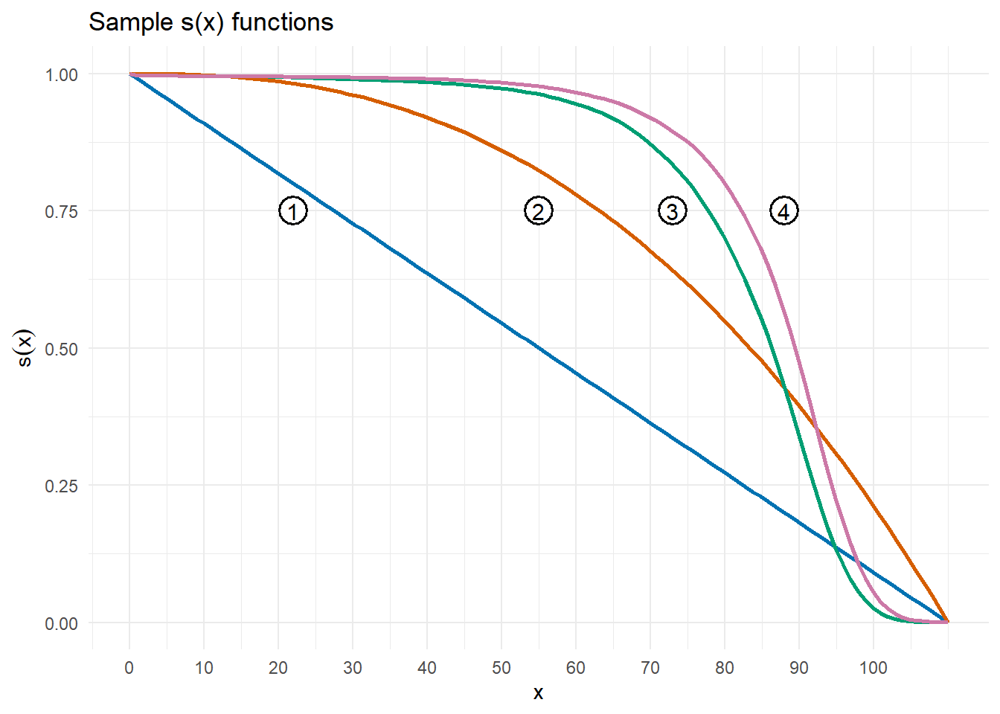
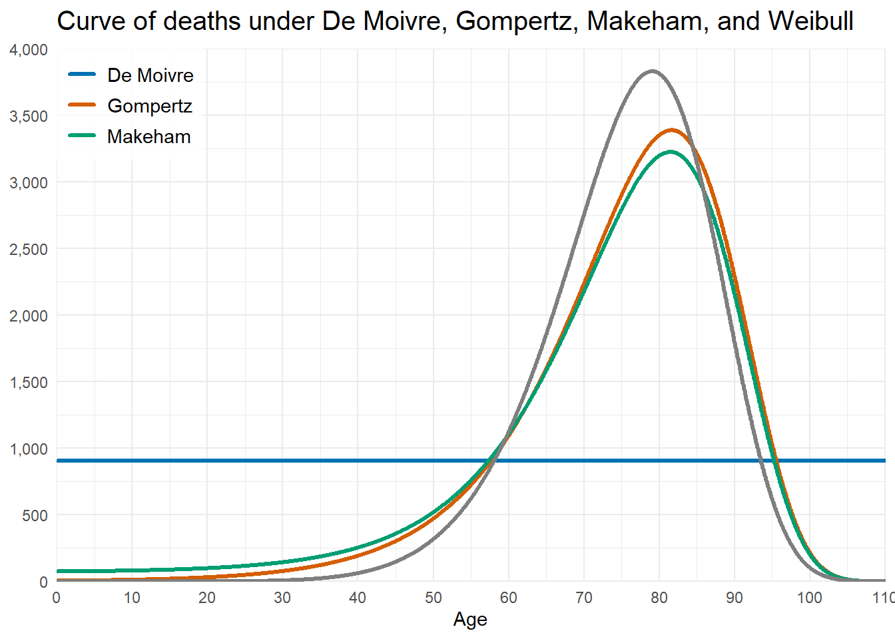
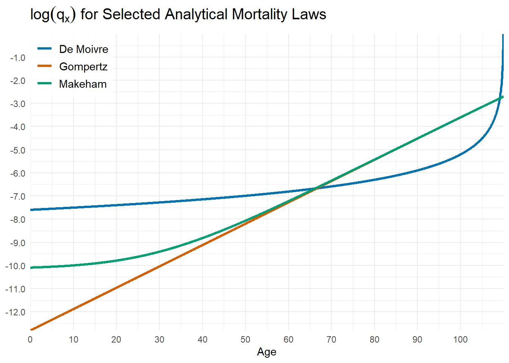
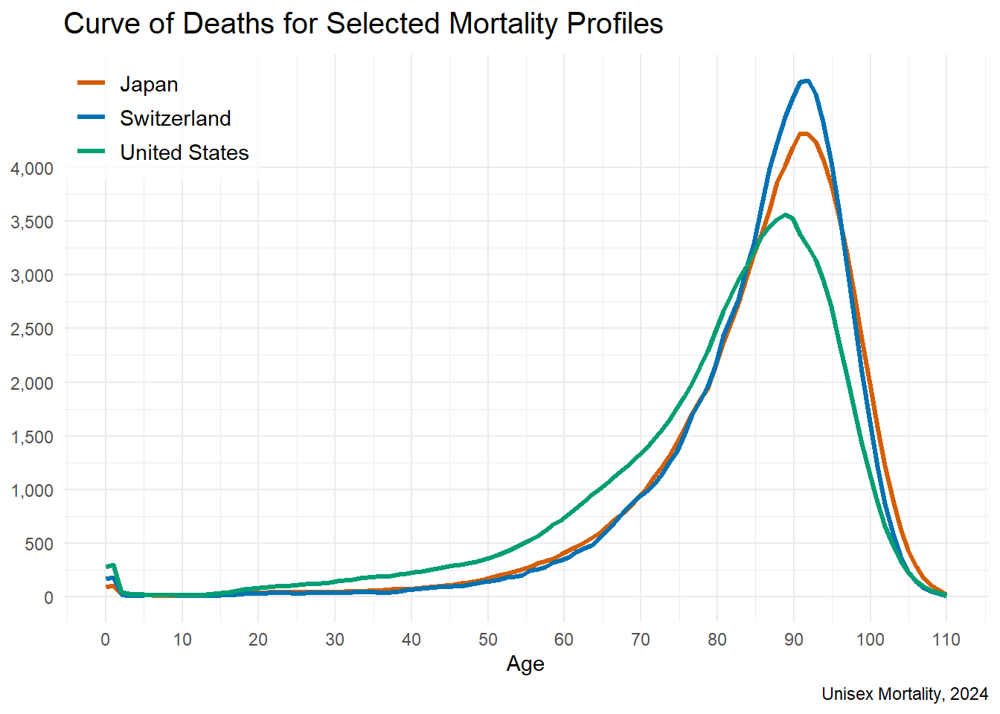
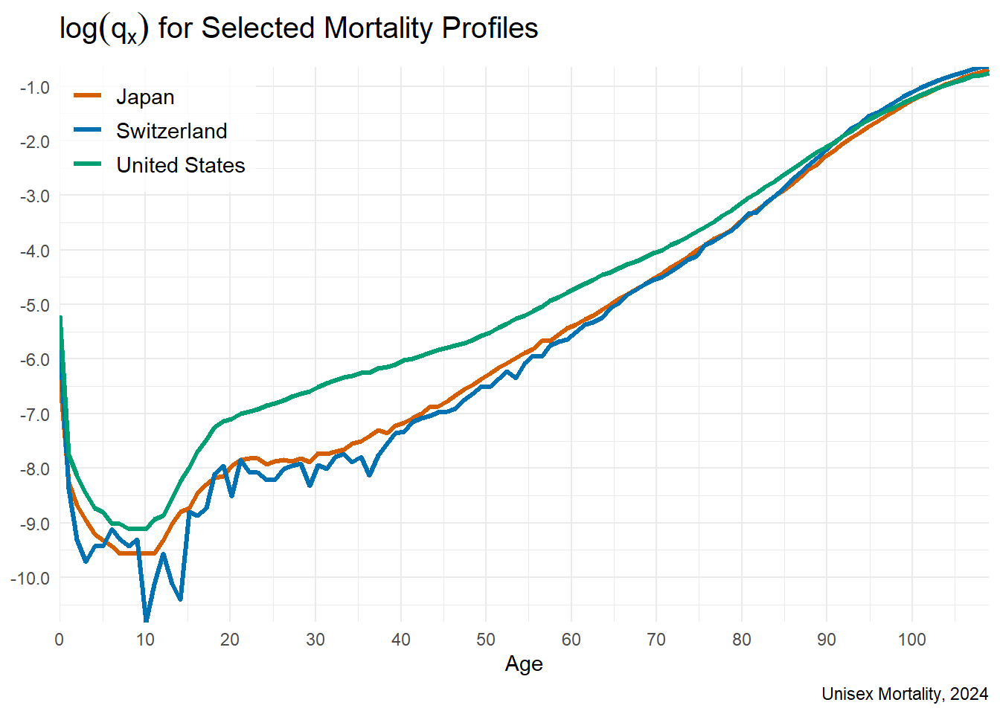

1 Survival Models
1.1 Supplementary Concepts
Let \(X\) be the random variable of age-at-death of a newborn. Then \(F(x)=\mathrm{Pr}[X \leq x]\) is the cumulative distribution function and \(s(x)=1-F(x)\) is the survival function.
A valid survival function \(s(x)\) must satisfy five properties:
- \(s(0)=1\) (normalization condition)
- \(s(x)\) is non-increasing in \(x\) (i.e., survival cannot increase with age)
- \(\lim_{x\to\infty} s(x)=0\) (i.e., nobody lives forever)
- \(s(x) \geq 0,\forall x \geq 0\)
- \(s(x)\) must be right-continuous
Line 1 represents \(s(x)=1-\dfrac{x}{110}\), a straight line anchored at \(s(0)=1\) and \(s(110)=0\).
Line 2 represents \(s(x)=1-\left( \dfrac{x}{110} \right)^{2.5}\), a concave curve anchored at \(s(0)=1\) and \(s(110)=0\).
Line 3 represents Swiss male mortality in 2024 (source: Human Mortality Database). Discrete observations have been turned into a continuous-looking curve.
Line 4 represents Swiss female mortality in 2024 (ibid.). Discrete observations have been turned into a continuous-looking curve.
- The conditional probability that a newborn dies between ages \(x\) and \(z\) given survival to age \(x\) is given by
\[ \boxed{ \begin{gathered} \\ \quad \mathrm{Pr}[\,x < X \leq z\,|\,X>x\,] = \frac{F(z) - F(x)}{1 - F(x)} = \frac{s(x) - s(z)}{s(x)} \quad \\ \\ \end{gathered} } \]
- The force of mortality (also known as the hazard rate) is defined as
Substituting \(x\) by \(y\) and reordering, \(-\mu_ydy=d\log{s(y)}\). And after integration, we get
\[ \boxed{ \begin{gathered} \\ \quad -\int_x^{x+n}\mu_ydy=\log{\frac{s(x+n)}{s(x)}} \quad \\ \\ \end{gathered} } \]Finally, through exponentiation of both sides of the equation above, we get
\[ \boxed{ \begin{gathered} \\ \quad \frac{s(x+n)}{s(x)}=\exp{\left( -\int_x^{x+n}\mu_ydy \right) } \quad \\ \\ \end{gathered} } \]And analogously,
\[ \boxed{ \begin{gathered} \\ \quad s(x) = \exp{\left( -\int_0^{x}\mu_sds \right) } \quad \\ \\ \end{gathered} } \]
- The following table relates \(F(x)\), \(f(x)\), \(s(x)\) and \(\mu_x\)
| \(F(x)\) | \(f(x)\) | \(s(x)\) | \(\mu_x\) | |
|---|---|---|---|---|
| \(F(x)\) | \(-\) | \(F'(x)\) | \(1-F(x)\) | \(\dfrac{F'(x)}{1-F(x)}\) |
| \(f(x)\) | \(\int_0^\infty f(r)dr\) | \(-\) | \(1-\int_0^\infty f(r)dr\) | \(\dfrac{f(x)}{\int_x^\infty f(r)dr}\) |
| \(s(x)\) | \(1-s(x)\) | \(-s'(x)\) | \(-\) | \(\dfrac{-s'(x)}{s(x)}\) |
| \(\mu_x\) | \(1-\exp{\left( -\int_0^x \mu_rdr\right)}\) | \(\mu_x \cdot\exp{\left( -\int_0^x \mu_rdr\right)}\) | \(\exp{\left( -\int_0^x \mu_rdr\right)}\) | \(-\) |
- The future lifetime of a person aged \(x\) is defined by the random variable \(T(x)=X-x\), where \(X\) is the random variable of age-at-death. Thus, the probability that a person aged \(x\) dies before \(t\) years is given by
where the symbol \(_tq_x\) conforms with the International Actuarial Notation.
Similarly, the probability that \((x)\) survives to age \(x+t\) is given by
\[ \boxed{ \begin{gathered} \\ \quad \mathrm{Pr}[\,T(x) > t\,] = s_x(t) = \frac{s_0(x+t)}{s_o(x)} = {_t}p_x \quad \\ \\ \end{gathered} } \]where the symbol \(_tp_x\) conforms with the International Actuarial Notation.
- The random variable \(K(x)\) denotes the number of complete years of future lifetime at age \(x\). A practical way to think of \(K\) is the number of future birthday parties that (hopefully!) \((x)\) will celebrate.
where the symbol \({_{k\vert}}q_x\) conforms with the International Actuarial Notation.
- Life expectancy at age \(x\) is given by
\[ \boxed{ \begin{gathered} \\ \quad \mathrm{E}[\,T(x)\,] = \int_0^\infty t\cdot f_x(t)\,dt = \int_0^\infty t\cdot {_t}p_x \,\mu_{x+t}\,dt = \int_0^\infty {_t}p_x\,dt \quad \\ \\ \end{gathered} } \]
- Analogously, the expected value of \(K\) is given by
\[ \boxed{ \begin{gathered} \\ \quad \mathrm{E}[\,K(x)\,] = \sum_0^\infty k\cdot \mathrm{Pr}[\,K(x)=k\,] = \sum_0^\infty k\cdot {_{k\vert}}q_x = \sum_0^\infty {_k}p_x \quad \\ \\ \end{gathered} } \]
- Let \(l_x\) be the number of survivors of exactly age \(x\) from a group of \(l_0\) newborns. Thus,
- \(d_x=l_x-l_{x+1}\) is the number of deaths between ages \(x\) and \(x+1\);
- \(q_x=\dfrac{d_x}{l_x}\) is the probability of dying between ages \(x\) and \(x+1\);
- \(p_x=1-q_x=\dfrac{l_{x+1}}{l_x}\) is the probability of surviving to age \(x+1\);
- If \(l_0\) and \(q_x\) values are available, a mortality table can be constructed as follows:
- \(l_1=l_0(1-q_0)=l_0-d_0\)
- \(l_2=l_1(1-q_1)=l_1-d_1=l_0-(d_0+d_1)\)
- \(\cdots\)
- \(l_x=l_{x-1}\,(1-q_{x-1})=l_{x-1}-d_{x-1}=l_0-\sum_{k=0}^{x-1}d_k\)
- The average number of years lived between ages \(x\) and \(x+1\) by an initial group of \(l_0\) newborns is given by
\[ \boxed{ \begin{gathered} \\ \quad L_x = \int_0^1 t\cdot {_t}p_x \,\mu_{x+t}\,dt\, +\, l_{x+1} = \int_0^1 l_{x+t}\,dt \quad \\ \\ \end{gathered} } \]
- The central rate of mortality is given by
\[ \boxed{ \begin{gathered} \\ \quad m_x = \frac{\int_0^1 l_{x+t}\,\mu_{x+t} \, dt}{\int_0^1 l_{x+t}\,dt} = \frac{d_x}{L_x} \quad \\ \\ \end{gathered} } \]
- The table below describes some analytical mortality laws:
| Originator | \(\mu_x\) | \(s(x)\) | Restrictions |
|---|---|---|---|
| De Moivre (1729) |
\(\dfrac{1}{\omega-x}\) | \(1-\dfrac{x}{\omega}\) | \(0 \leq x < \omega\) |
| Gompertz (1825) |
\(Bc^x\) | \(\exp{\left[ -m(c^x-1) \right]}\) | \(B>0{,}\; c>1{,}\; x \geq 0\) |
| Makeham (1860) |
\(A+Bc^x\) | \(\exp{\left[-Ax -m(c^x-1) \right]}\) | \(A \geq -B{,}\; c>1{,}\; x \geq 0\) |
| Weibull (1939) |
\(k\,x^n\) | \(\exp{\left[-u\,x^{n+1} \right]}\) | \(k > 0{,}\; n>0{,}\; x \geq 0\) |
\(\\\)
In the table above, \(m=\dfrac{B}{\log c}\) and \(u=\dfrac{k}{n+1}\).
The function \(l_x \mu_x\) is proportional to the probability density function of \(X\) and it represents the density of deaths. The graph of \(l_x \mu_x\) over its domain is called the curve of deaths.

For the above graph, the following parameters were used:
- \(l_0=100{,}000\)
- \(\omega = 110\) (De Moivre)
- \(B = 0.00005{,}\;c=10^{0.04}\) (Gompertz)
- \(A=0.0007{,}\;B = 0.00005{,}\;c=10^{0.04}\) (Makeham)
- \(n=80.28{,}\;k=8.30\) (Weibull)
It is also worth comparing the graph of \(\log q_x\) for the analytical laws of mortality above:

- In contrast to the above graph which is based on parametric functions, the graph below is obtained from actual mortality data, through the approximation \(\mu_{x+1/2}=-\log p_x\).

A commonly used graph is to plot the function \(\log q_x\). Given the tables below, the resulting graph is:

1.2 Solved Exercises
Before opening the solutions, take a moment to work through each problem—-your mastery grows most when you engage actively with the mathematics.
Basic probabilities
Let \(S(x)\) be defined as follows:
\[s(x) = \left\{
\begin{array}{ll}
1-\dfrac{x}{250} & 0 \leq x < 40 \\
1-{\left( \dfrac{x}{100} \right)}^2 & 40 \leq x \leq 100 \\
\end{array}
\right.
\] 1. Calculate the probability that \((25)\) dies within the next \(30\) years.
2. Calculate the probability that \((25)\) dies in her fortieth year of live.
3. Calculate the probability that \((25)\) does not die between ages \(35\) and \(45\)
4. Calculate the probability that \((25)\) celebrates her eightieth birthday.
NoteSolution
- The probability that \((25)\) dies within the next \(30\) years is given by
\({_{30}}q_{25}=\dfrac{s(25)-s(55)}{s(25)}=0.225\)
- The probability \((25)\) dies in her fortieth year of live is given by
\({_{14|}}q_{25}={_{14}}p_{25}\;q_{39}=\dfrac{\cancel{s(39)}}{s(25)}\cdot\dfrac{s(39)-s(40)}{\cancel{s(39)}}=0.00\bar{4}\)
- The probability that \((25)\) does not die between ages \(35\) and \(45\) is given by
\(1-{_{10|10}}q_{25}=1-{_{10}}p_{25}\;{_{10}}q_{35}=1-\dfrac{\cancel{s35}}{s(25)}\cdot\dfrac{s(35)-s(45)}{\cancel{s(35}}=0.930556\)
- The probability that \((25)\) celebrates her eightieth birthday is given by
\(\dfrac{s(80)}{s(25)}=0.4\)
\(\\\)
Variance of \(T\)
Let \({_t}q_0=\dfrac{t}{110}\) for \(0 \leq t \leq 110\).
Calculate \(\mathrm{Var}[T(0)]\).
NoteSolution
To simplify notation, we set \(T=T(0)\). Next, we calculate \(\mathrm{E}[T]\) and \(\mathrm{E}[T^2]\) from basic principles. Note that the probability density function of \(T\) is given by \(f_{T(0)}(t)={_t}p_0\,q_{0+t}\).
Thus,
\[\begin{align} \mathrm{E}[T] &= \int_0^{110-0}t\;{_t}p_0\,q_{0+t}\,dt \\ \\ &= \int_0^{110}t\,\left[ \dfrac{\cancel{110-0-t}}{110} \right] \left[ \dfrac{1}{\cancel{110-0-t}} \right] dt \\ \\ &= \left. \dfrac{t^2}{2(110)} \right|_0^{110} \\ \\ &= 55 \\ \\ \\ \\ \mathrm{E}[T^2] &= \int_0^{110-0}t^2\;{_t}p_0\,q_{0+t}\,dt \\ \\ &= \left. \dfrac{t^3}{3(110)} \right|_0^{110} \\ \\ &= 4033.33 \\ \end{align}\]
Therefore, \(\mathrm{Var}[T]=\mathrm{E}[T^2]-{\left( \mathrm{E}[T] \right)}^2=1088.\overline{33}\)
\(\\\)
Force of mortality
Let \(l_x=1000\;\sqrt{100-x}\) for \(0 \leq x \leq 100\).
Calculate \(\mu_{40}\).
NoteSolution
Recall that \(\mu_x=\dfrac{-\frac{d}{dx}l_{x}}{l_x}\).
Then:
\(\mu_x=\dfrac{-\dfrac{d}{dx}1000{(100-x)}^{0.5}}{1000{(100-x)}^{0.5}}=\dfrac{- \left[ -\dfrac{1000}{2} {(100-x)}^{0.5} \right] }{1000{(100-x)}^{0.5}}=\dfrac{1}{2(100-x)}\)
Thus, \(\mu_{40}=\dfrac{1}{120}\)
\(\\\)
1.3 Supplementary Exercises
1
Let \(s(x)= \dfrac{20,000\,-\,100x\,-\, x^2}{20,000}\).
verify that \(s(x)\) satisfies the conditions of a survival function
determine \(\omega\)
calculate the probability that \((0)\) survives to age \(35\)
calculate the probability that \((15)\) dies before age \(42\)
calculate the probability that \((20)\) dies between ages \(50\) and \(70\)
2
Let \(s(x)=1-0.01x\), \(0\leq x\leq 100\).
Calculate the probability that
\((0)\) reaches age \(25\)
\((0)\) dies between ages \(15\) and \(42\)
\((15)\) dies before age \(42\)
\((36)\) survives to age \(64\)
3
Let \(\varphi(x)= {-\dfrac{d}{dx}}\normalsize s(x)\).
Show that
\(\int_{0}^{\omega}\varphi(x),dx=1\)
\(\int_{x}^{x+n}\varphi(y),dy\) is the probability that a newborn dies between ages \(x\) and \(x+n\)
\(s(x)=1-\int_{0}^{x}\varphi (y),dy\)
If \(\varphi(x)=\dfrac {2}{75}x^{-{\frac{1}{3}}}\), find \(s(x)\) and \(\omega\)
4
Let \(s(x)=exp{(\dfrac{-x^3}{12})}\), \(x \geq0\).
Verify that \(s(x)\) satisfies the conditions of a survival function.
5
Let \(s(x)=e^{-2x}\), \(x \geq0\).
Compute
The expected value of \(X\)
The median of \(X\)
The mode of \(X\)
The standard deviation of \(X\)
6
Let \(s(x)=(1+x)^{-4}\), \(x \geq0\).
Calculate the expected number of years of future lifetime for a person aged \(41\).
7
Let \(s(x)=1-0.008,x\), \(0\leq x\leq 125\)
Calculate the number of years people aged \(70\) are expected to live before reaching \(90\).
8
Let \(f(x)=(20\sqrt {100-x})^{-1})\), \(0\leq x\leq100\).
Calculate the probability that a person aged \(69.75\) dies within the next decade.
9
Let \(\mu_{x}=(4+x)^{-1}\), \(x \geq0\).
Calculate the probability that the age at death of a newborn exceeds five years.
10
Complete the missing entries in the table below, working rowwise.
| \(s(x)\) | \(F(x)\) | \(f(x)\) | \(\mu_x\) |
|---|---|---|---|
| \((100-x)^{-1}{,}\) \(0 \leq x \leq 100\) |
|||
| \(e^{-x}{,}\) \(x \geq 0\) |
|||
| \(1-(1+x)^{-1}{,}\) \(x \geq 0\) |
|||
| \(\dfrac{100-x}{5\,000}{,}\) \(0 \leq x \leq 100\) |
\(\\\)
11
Assuming a constant force of mortality, the future lifetime of a person aged \(x\) is two years.
Calculate the \(75^{\text{th}}\) percentile of the distribution of \(T\).
12
Let \(\mu_{x}=3,(110-x)^{-1}+(150-x)^{-1}\), \(0 \leq x\leq 110\).
Calculate \(_{70}p_{10}\).
13
Let \(z(w)=\exp(-\int_{x}^{x+n} \mu_{y} dy)\).
State in terms of \(z(w)\) the probability that \((x)\) dies between ages \(n\) and \(m\), \(x<n<m\).
14
Let \(s(x)=exp(-ex)\), \(x>0\).
Find the average age at death of those currently aged \(10e\).
15
Assume the following cumulative distribution function for \(T(0)\):
\[ F(t)= \left\{ \begin{array}{ll} \dfrac{t}{100-x} & 0 \le t < 100-x \\ 0 & \text{otherwise} \end{array} \right. \]
Compute:
\(\mathrm{E[T]}\)
\(\mathrm{Var[T]}\)
\(\text{median}[T]\)
16
Let \(\mu_{x}=1, \forall{x}\).
Calculate \(E[T-K]\).
17
Let \(s(x)=1-0.005x-0.0005x^{2}\), \(0 \leq x \leq 100\).
Construct the \(l_{x}\), \(d_{x}\), \(q_{x}\) and \(p_{x}\) columns of the corresponding life table for ages \(0, 1, 2\), assuming a radix of \(100,000\).
18
From the following values of \(q_x\), construct the \(l_x\) and \(d_x\) columns, assuming a radix of \(1\,000\,000\).
| \(x\) | \(q_x\) | \(l_x\) | \(d_x\) |
|---|---|---|---|
| \(0\) | \(0.011\) | ||
| \(1\) | \(0.005\) | ||
| \(2\) | \(0.003\) |
\(\\\)
19
From the following values of \(l_{x}\),
| \(x\) | \(l_x\) |
|---|---|
| \(30\) | \(94\,401\) |
| \(35\) | \(93\,589\) |
| \(55\) | \(82\,463\) |
| \(64\) | \(67\,970\) |
| \(65\) | \(65\,834\) |
| \(66\) | \(63\,603\) |
\(\\\)
calculate the probability that \((35)\)
lives at least \(30\) years
dies within the next \(30\) years
dies in the thirtieth year from the current age
dies between ages \(55\) and \(65\)
20
Let \(l_{x}=100{,}000-1000x\), \(0 \leq x \leq 100\).
Calculate the expected number of complete future years of life at age \(97\).
21
Suppose \(\int_{10}^{\infty} {_t}p_{50}\,dt=15\) and \(\int_{0}^{\infty} {_t}p_{60}\,dt=20\).
Calculate \(_{10}p_{50}\).
22
Let \(s(x)=e^{-0.2x}-e^{-0.4x}\), \(x>5\log 2\).
Calculate the mode of the distribution of the number of deaths in a group of people currently aged \(x=5\log 2\).
23
Let \({_t}p_x=1-0.6t+0.12\,t^2-0.008\,t^3\), \(0 \leq x \leq 5\).
Calculate \(\mu_{x+3}\).
24
Let \(l_{x}=100{,}000-15{,}000x-6000x^{2}+1000x^{3}\), \(0 \leq x \leq 5\).
From a group of \(l_0\) newborns, calculate the maximum number of deaths in any one-year interval.
25
Let \(l_{1}=10,000\) and \(d_{x}=x(x+1)\), \(x=1, 2, 3, \dots , 30\).
Calculate \({_{30}}q_1\).
26
Let \(L{x}=(40-x)^{2}\), \(0 \leq x \leq 40\).
Calculate the central death rate at age \(35\).
27
Let \(s(x)=1-\dfrac{x}{110}\), \(0 \leq x < 110\).
Calculate
the force of mortality at age \(25\)
the life expectancy at age \(25\)
28
The mortality pattern of \(50{,}000\) newborns is such that \(l_{x}\mu_{x}\) is constant, \(0 \leq x \leq \omega\).
If \(\dfrac{d^{6}}{dx^{6}}=\dfrac{45}{8}\) for \(x=58\), calculate the expected number of survivors at age \(42\).
29
Let \(p_{x}=0.944\), \(p_{x+1}=0.938\), \({_{3}}p_{x+1}=0.811\) and \(q_{x+3}=0.074\).
Calculate the probability that \((x)\) dies between ages \(x\) and \(x+1\).
30
Let \(s(x)=(1+x)^{-0.8}\), \(x \geq 0\).
Calculate the \(69\)th percentile of the distribution of the random variable \(T\) for future lifetime, at age \(37\).